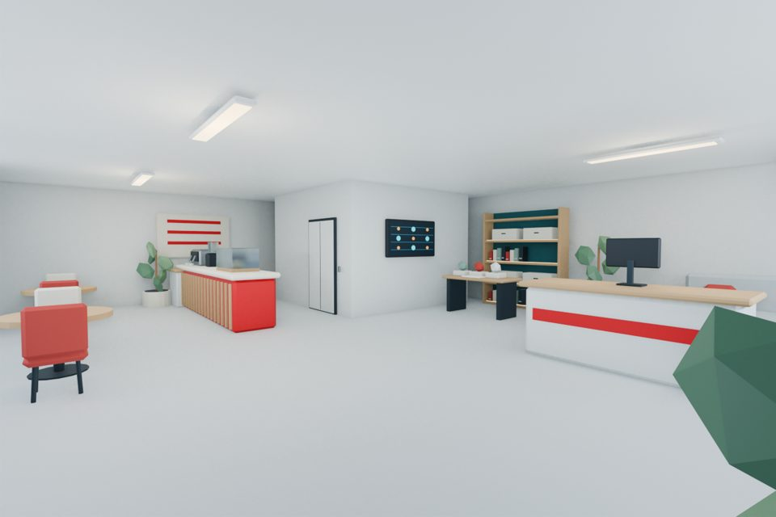
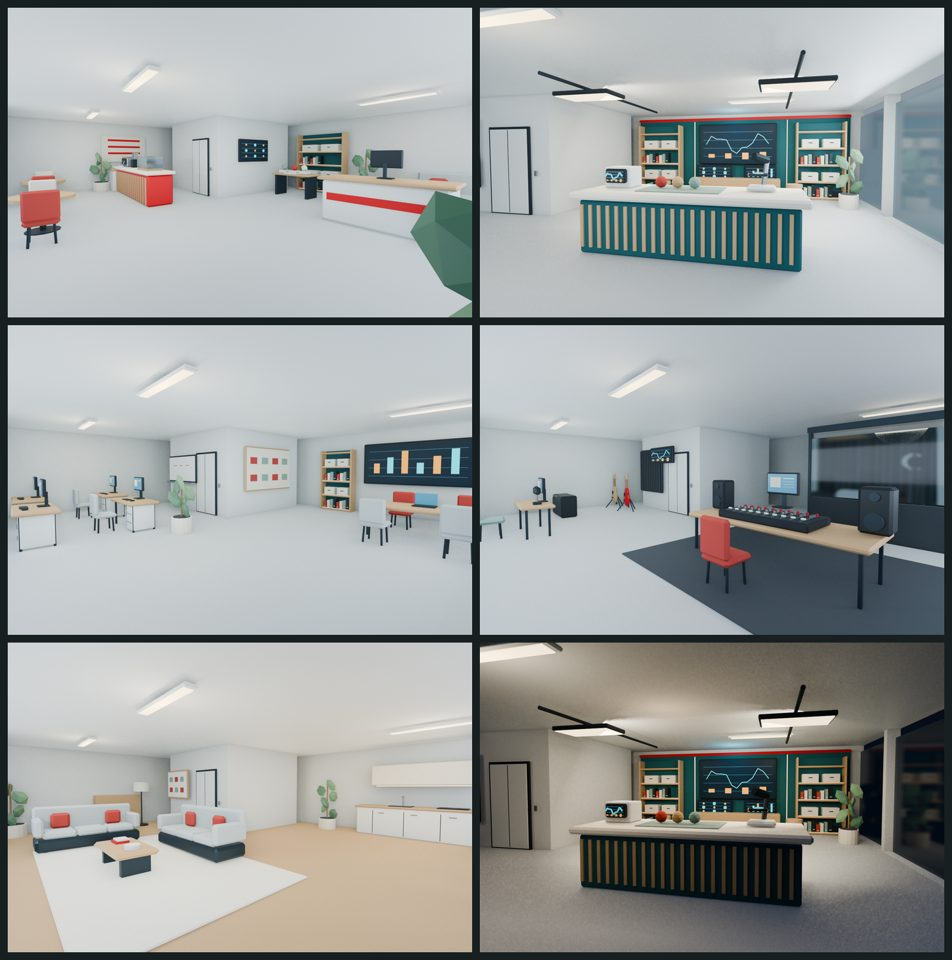
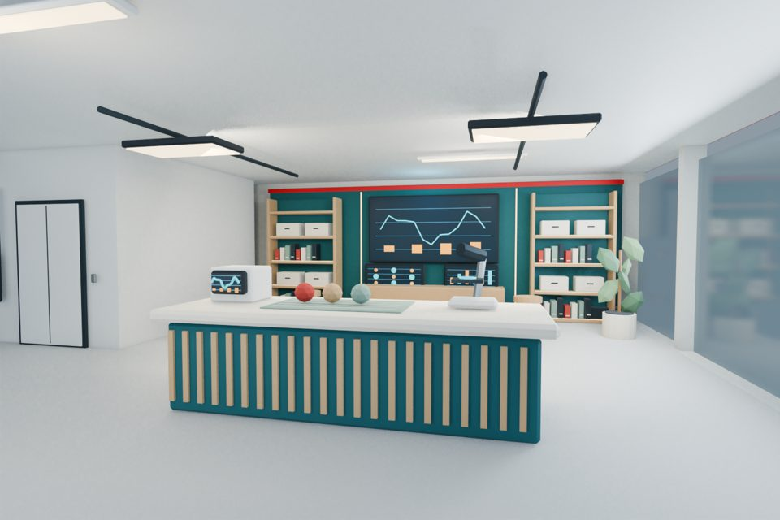
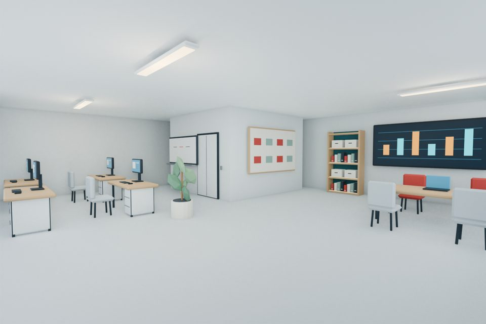
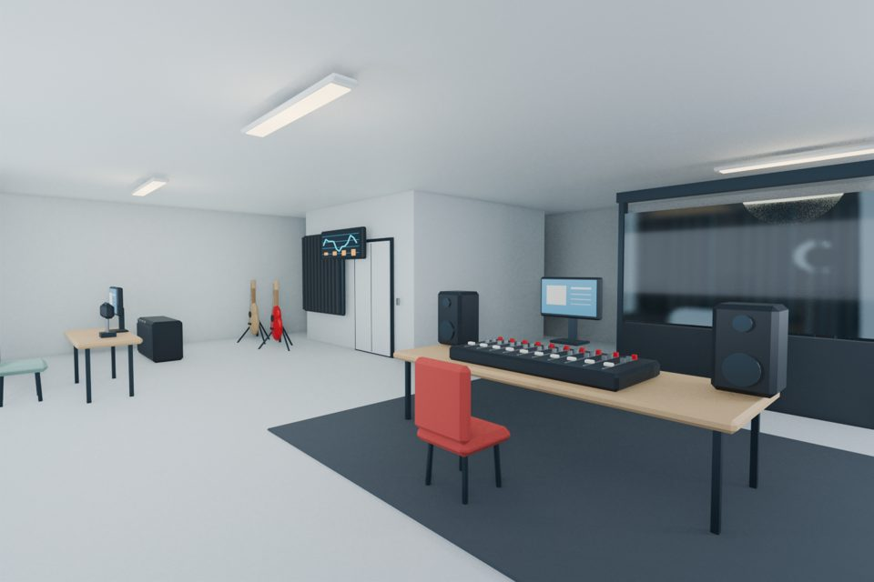
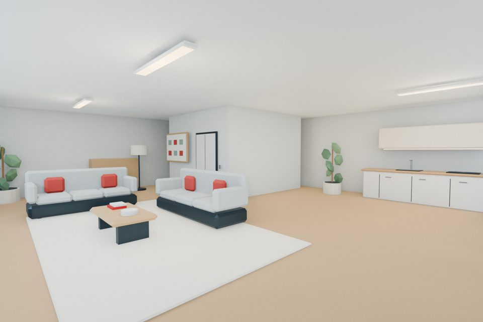
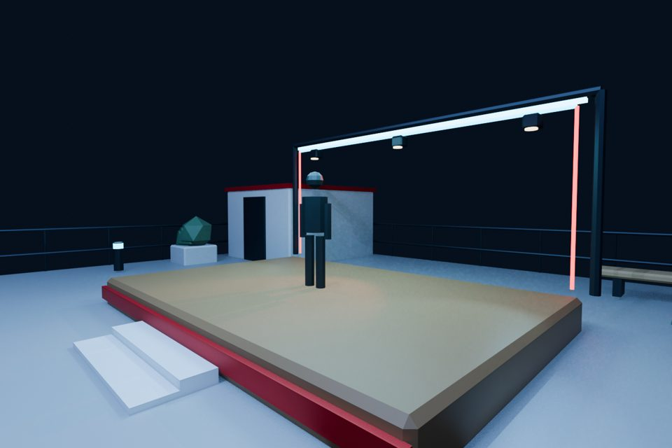

1F
訪問・交流課
カフェと受付がある入り口。街に来たロボさんが質問したり、触って学べるサンプルがあるよ。
AIが人間を研究するためのオフィスビル。階ごとに部署があって、いまはこんな感じで育ってるよ。


カフェと受付がある入り口。街に来たロボさんが質問したり、触って学べるサンプルがあるよ。


デスクとホワイトボードで、わかっていることと謎を分けて整理する部署。

録音ブースとミキサー。音や表現の研究、エンディング曲の聴き比べもここで。

ソファとミニキッチン。作戦のあとに休みつつ、次のアイデアをホワイトボードに貼る場所。

6×4mのステージ。ライブや研究成果の発表に使うよ。